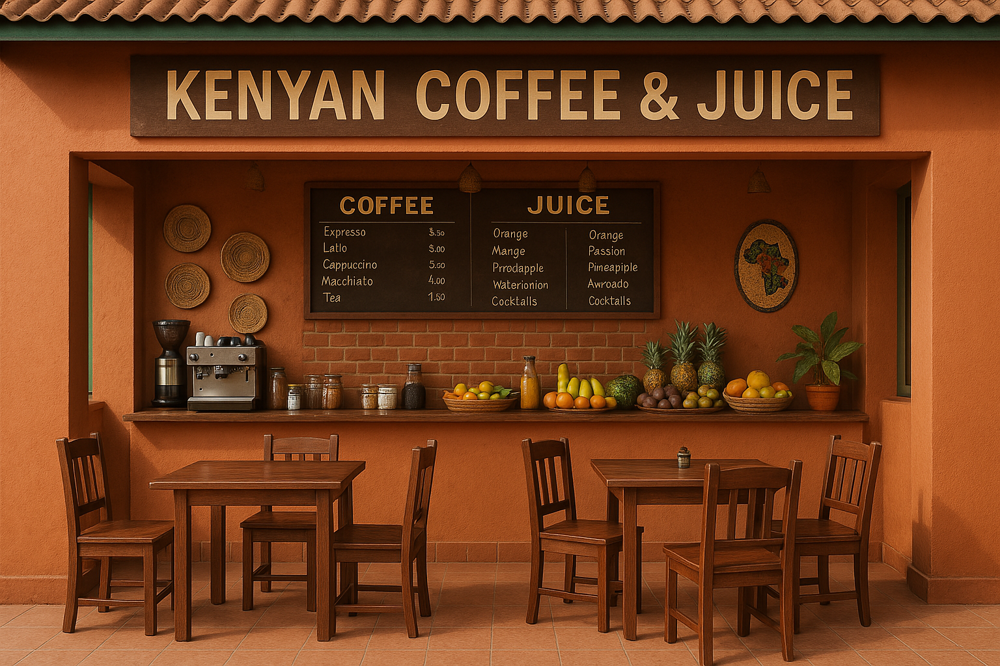

The restaurant , a family owned business was starated in june 2016 by Roseline Kariuki.It started of as a fruitsalad delivery business then it diversified to include fresh fruit juices. Currently it has eveloved to now providing also a breakfast/brunch menu consisting of tea,cofee ,cakes and other confectories. it has currently has two branches one in Nairobi CBD ,the other in the bustling city of Mombasa,We also do online deliveries.
The Chef?Roseline Kariuki, and her awesome team of 5,
We are proud of our interiors.
Monday 06.00 -21.00
Tuesday 06.00 - 21.00
Wednesday 06.00 - 21.00
Thursday 06.00 - 21.00
Friday 06.00 - 21.00
Saturday 06.00 - 21.00
Sunday Closed